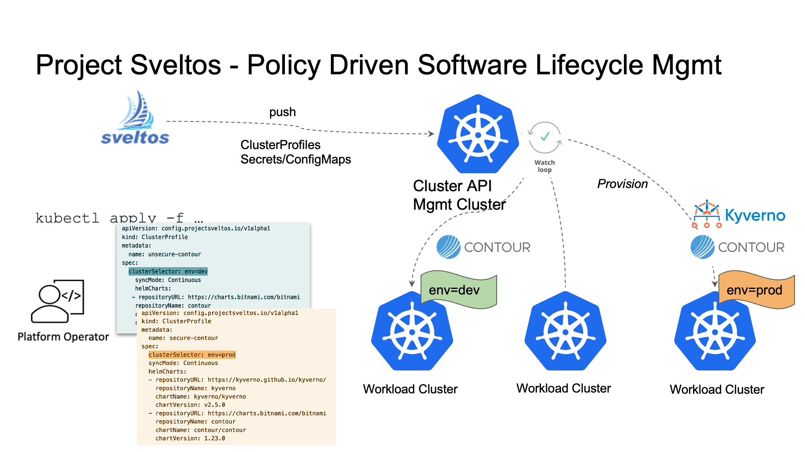

Deep dive into Configuration
Deploying add-ons
ClusterProfile is the CRD used to instructs Sveltos about:
- which Kubernetes add-ons to deploy;
- where (on which Kubernetes clusters) to deploy the Kubernetes add-ons.

Cluster Selection
The clusterSelector field is a Kubernetes label selector. Sveltos uses it to detect all the clusters where add-ons need to be deployed.
Example: clusterSelector: env=prod
Helm charts
The helmCharts field allows to list a set of helm charts to deploy. Sveltos will deploy helm chart in the same exact order those are defined in this field.
Kubernetes resources
The policyRefs field points to list of ConfigMaps/Secrets. Each referenced ConfigMap/Secret contains yaml/json content as value.
Both Secrets and ConfigMaps data fields can be a list of key-value pairs. Any key is acceptable, and as value, there can be multiple objects in yaml or json format.
Secrets are preferred if the data includes sensitive information.
To create a secret that has calico YAMLs in its data field to be used by ClusterProfile:
wget https://raw.githubusercontent.com/projectcalico/calico/master/manifests/calico.yaml
kubectl create secret generic calico --from-file=calico.yaml --type=addons.projectsveltos.io/cluster-profile
The following YAML file is an example of ConfigMap, containing multiple resources. When Sveltos deploys this ConfigMap as part of our ClusterProfile, a GatewayClass and Gateway instance are automatically deployed in any matching cluster.
---
apiVersion: v1
kind: ConfigMap
metadata:
name: contour-gateway
namespace: default
data:
gatewayclass.yaml: |
kind: GatewayClass
apiVersion: gateway.networking.k8s.io/v1beta1
metadata:
name: contour
spec:
controllerName: projectcontour.io/projectcontour/contour
gateway.yaml: |
kind: Namespace
apiVersion: v1
metadata:
name: projectcontour
---
kind: Gateway
apiVersion: gateway.networking.k8s.io/v1beta1
metadata:
name: contour
namespace: projectcontour
spec:
gatewayClassName: contour
listeners:
- name: http
protocol: HTTP
port: 80
allowedRoutes:
namespaces:
from: All
ClusterProfile can only reference Secret of type addons.projectsveltos.io/cluster-profile
Here is a ClusterProfile referencing above ConfigMap and Secret.
apiVersion: config.projectsveltos.io/v1alpha1
kind: ClusterProfile
metadata:
name: deploy-resources
spec:
clusterSelector: env=fv
policyRefs:
- name: contour-gateway
namespace: default
kind: ConfigMap
- name: calico
namespace: default
kind: Secret
When referencing ConfigMap/Secret, kind and name are required. Namespace is optional:
- if namespace is set, it uniquely indenties a resource and that resource will be used for all matching clusters;
- if namespace is left empty, for each matching cluster, Sveltos will use the namespace of the cluster.
apiVersion: config.projectsveltos.io/v1alpha1
kind: ClusterProfile
metadata:
name: deploy-kyverno
spec:
clusterSelector: env=fv
policyRefs:
- name: contour-gateway
kind: ConfigMap
With above ClusterProfile, if we have two workload clusters matching, one in namespace foo and one in namespace bar, Sveltos will look for ConfigMap contour-gateway in namespace foo for Cluster in namespace foo and for a ConfigMap contour-gateway in namespace bar for Cluster in namespace bar.
More ClusterProfile examples can be found here.
Sync mode
The syncMode field has three possible options. Continuous and OneTime are explained below. DryRun is explained in a separate section.
Example: syncMode: Continuous
OneTime
Upon deployment of a ClusterProfile with a syncMode configuration of OneTime, all clusters are checked for a clusterSelector match, and all matching clusters will have the current ClusterProfile-specified features installed at that time.
Any subsequent changes to the ClusterProfile instance will not be deployed into the already matching clusters.
Continuous
When the syncMode configuration is Continuous, any new changes made to the ClusterProfile instanceare immediately reconciled into the matching clusters.
Reconciliation consists of one of these actions on matching clusters:
- deploy a feature — whenever a feature is added to the ClusterProfile or when a cluster newly matches the ClusterProfile;
- update a feature — whenever the ClusterProfile configuration changes or any referenced ConfigMap/Secret changes;
- remove a feature — whenever a Helm release or a ConfigMap/Secret is deleted from the ClusterProfile.
Continuous with configuration drift detection
See Configuration Drift.
DryRun
See Dry Run Mode.
DryRun mode
Before adding, modifying, or deleting a ClusterProfile, it is often useful to see what changes will result from the action. When you deploy a ClusterProfile with a syncMode configuration of DryRun, a workflow is launched that will simulate all of the operations that would be executed in an actual run. No actual change is applied to matching clusters in the dry run workflow, so there are no side effects.
The dry run workflow generates a list of potential changes for each matching cluster, allowing you to inspect and validate these changes before deploying the new ClusterProfile configuration.
You can see the change list by viewing a generated Custom Resource Definition (CRD) named ClusterReport, but it is much easier to view the list using a sveltosctl CLI command, as shown in the following example:
./bin/sveltosctl show dryrun
+-------------------------------------+--------------------------+-----------+----------------+-----------+--------------------------------+------------------+
| CLUSTER | RESOURCE TYPE | NAMESPACE | NAME | ACTION | MESSAGE | CLUSTER PROFILE |
+-------------------------------------+--------------------------+-----------+----------------+-----------+--------------------------------+------------------+
| default/sveltos-management-workload | helm release | kyverno | kyverno-latest | Install | | dryrun |
| default/sveltos-management-workload | helm release | nginx | nginx-latest | Install | | dryrun |
| default/sveltos-management-workload | :Pod | default | nginx | No Action | Object already deployed. | dryrun |
| | | | | | And policy referenced by | |
| | | | | | ClusterProfile has not changed | |
| | | | | | since last deployment. | |
| default/sveltos-management-workload | kyverno.io:ClusterPolicy | | no-gateway | Create | | dryrun |
+-------------------------------------+--------------------------+-----------+----------------+-----------+--------------------------------+------------------+
For a demonstration of dry run mode, watch the video Sveltos, introduction to DryRun mode on YouTube.
Managing labels
The core idea of Sveltos is to give users the ability to programmatically decide which add-ons should be deployed where by utilizing a ClusterSelector that selects all clusters with labels matching the selector. However, users were still required to manage the cluster labels manually.
Sometimes it is preferable for cluster labels to change automatically as the cluster runtime state changed so that:
- as cluster runtime state changes, cluster labels change;
- when cluster labels change, ClusterProfile instances matched by a cluster change;
- because cluster starts matching new ClusterProfile, new set of add-ons are deployed.
For instance, the versions of add-ons required and/or what add-ons are needed, depend on the cluster runtime state. Each time a cluster is upgraded, addon versions need to change as well.
To address this scenarion, Sveltos introduced Classifier. It is used to dynamically classify a cluster depending on its runtime configuration. Current classification criteria are either based on the Cluster Kubernetes version or the resource deployed in the cluster.
Classifier also enables you to specify the set of labels that must be added to a cluster for its runtime state to match the Classifier instance.

More examples can be found here
# Following Classifier will match any Cluster whose
# Kubernetes version is >= v1.24.0 and < v1.25.0
apiVersion: lib.projectsveltos.io/v1alpha1
kind: Classifier
metadata:
name: kubernetes-v1.24
spec:
classifierLabels:
- key: k8s-version
value: v1.24
kubernetesVersionConstraints:
- comparison: GreaterThanOrEqualTo
version: 1.24.0
- comparison: LessThan
version: 1.25.0
Classifier Labels
The field classifierLabels contains all the labels (key/value pair) which will be added automatically to any cluster matching a Classifier instance.
Kubernetes version constraints
The field kubernetesVersionConstraints can be used to classify a cluster based on its current Kubernetes version.
Resource constraints
The field deployedResourceConstraints can be used to classify a cluster based on current deployed resources. Resources are identified by Group/Version/Kind and can be filtered based on their namespace and labels and some fields.
Snapshot
Sveltosctl when running as a Pod in the management cluster, can be configured to collect configuration snapshots. Snapshot CRD is used for that.
---
apiVersion: utils.projectsveltos.io/v1alpha1
kind: Snapshot
metadata:
name: hourly
spec:
schedule: "0 * * * *"
storage: /collection
schedule field specifies when a snapshot needs to be collected. It is Cron format.
storage field represents a directory where snapshots will be stored. It must be an existing directory (on a PersistentVolume mounted by sveltosctl)
Tech-support
Sveltosctl when running as a Pod in the management cluster, can be configured to collect tech-support from managed clusters. Snapshot CRD is used for that.
---
apiVersion: utils.projectsveltos.io/v1alpha1
kind: Techsupport
metadata:
name: hourly
spec:
clusterSelector: env=fv
schedule: "00 * * * *"
storage: /collection
logs:
- labelFilters:
- key: env
operation: Equal
value: production
- key: department
operation: Different
value: eng
namespace: default
sinceSeconds: 600
resources:
- group: "apps"
kind: Deployment
labelFilters:
- key: env
operation: Equal
value: production
- key: department
operation: Different
value: eng
namespace: default
version: v1
- group: ""
kind: Service
labelFilters:
- key: env
operation: Equal
value: production
- key: department
operation: Different
value: eng
namespace: default
schedule field specifies when a tech-support needs to be collected. It is Cron format.
storage field represents a directory where snapshots will be stored. It must be an existing directory (on a PersistentVolume mounted by sveltosctl)
logs field instructs Sveltos on which logs to collect. In above example, all logs in default namespace with label env=production and department!=eng. Only last 600 seconds of log will be collected.
resources field is a list of Kubernetes resources Sveltos needs to collect. In above example, Services and Deployments from default namespace with labels matching env=production and department!=eng.
Controller configurations
Sveltos manager
Following arguments can be used to customize Sveltos manager controller:
- concurrent-reconciles: by default Sveltos manager reconcilers runs with a parallelism set to 10. This arg can be used to change level of parallelism;
- worker-number: number of workers performing long running task. By default this is set to 20. Increase it number of managed clusters is above 100. Read this Medium post to know more about how Sveltos handles long running task.
Classifier
- concurrent-reconciles: by default Sveltos manager reconcilers runs with a parallelism set to 10. This arg can be used to change level of parallelism;
- worker-number: number of workers performing long running task. By default this is set to 20. If number of Classifier instances is in the hundreds, please consider increasing this;
- report-mode: by default Classifier controller running in the management cluster periodically collects ClassifierReport instances from each managed cluster. Setting report-mode to "1" will change this and have each Classifier Agent send back ClassifierReport to management cluster. When setting report-mode to 1, control-plane-endpoint must be set as well. When in this mode, Sveltos automatically creates a ServiceAccount in the management cluster for Classifier Agent. Only permissions granted for this ServiceAccount are update of ClassifierReports.
- control-plane-endpoint: the management cluster controlplane endpoint. Format <ip>:<port>. This must be reachable frm each managed cluster.